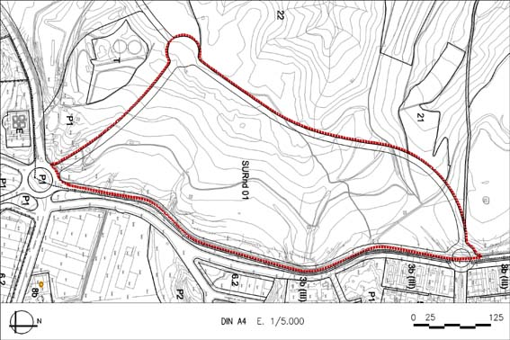

SURnd 01 “Sector Guineua nord” (Sòl Urbanitzable no delimitat SURnd – 01)

Objectiu: Creixement del nucli cap al nord, amb ús d’habitatge, industria urbana i terciari. Transformació de l’antiga carretera en el passeig a continuació del carrer Major, i que ha de fer possible la connexió de Can Costa amb el nucli urbà.
Règim del sòl: Sòl Urbanitzable no delimitat (SURnd)
| Superfície del sector: Ordenació (plànol indicatiu) Sistemes urbanístics de cessió: Viari (V) Espais lliures (P1) Equipaments (E) Altres cessions Zones edificables: Es recomana ordenació s/ volumetria específica |
122.549 m2s segons PPD inclosa variant segons PPD i DL 1/2005 segons PPD i DL 1/2005 10% de l’aprofitament urbanístic del sector segons PPD |
Coeficient d’edificabilitat brut (CEB): Nombre màxim d’habitatges: Règim HRL : 65% SH Règim HPC: 10% SH Règim HPO : 25% SH Règim HP lloguer: |
0,535st/m2s 429 hab. 254 44 131 |